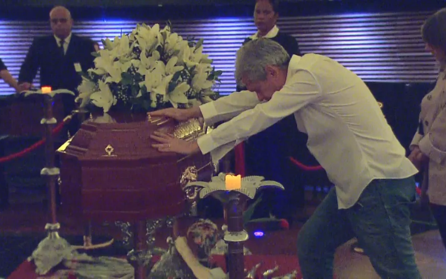

Sua Morte.
Em maio de 2021, quando tinha 73 anos de idade, realizou um exame de saúde rotineiro e foi diagnosticada com um
tumor primário no pulmão esquerdo. Os médicos que a diagnosticaram previram uma sobrevida de três a quatro meses. Ao longo do tratamento, o câncer entrou em processo de metástase e a cantora teve de iniciar uma
quimioterapia. Em abril de 2022, novos exames indicaram a ausência de um dos tumores, apelidado por ela de "Jair", em referência ao então presidente Jair Bolsonaro. Ainda assim, a doença continuou a se espalhar pelos órgãos de Rita.
Em fevereiro de 2023, Rita foi internada no hospital Albert Einstein, em São Paulo, em estado "extremamente delicado". Algumas horas após a informação ser divulgada, o marido da cantora, Roberto, disse em suas redes sociais que a internação seria "para exames e avaliações" e pediu privacidade. Rita obteve alta no mês seguinte. Desde então, ela entrou em cuidados paliativos, sendo acompanhada por duas enfermeiras.
Nesse ponto, havia perdido a capacidade de andar, estando instalada em um quarto de hospital.
Em 8 de maio de 2023, seu estado de saúde piorou novamente e ela morreu cercada de sua família, em seu
apartamento em São Paulo. Sua família anunciou que seu velório ocorreria no Planetário do Ibirapuera em 10 de maio, sendo aberto ao público. O presidente do Brasil, Luiz Inácio Lula da Silva, decretou luto oficial de três dias em pesar pelo seu falecimento. "Uma artista a frente do seu tempo. Julgava
inapropriado o título de rainha do rock, mas o apelido faz jus a sua trajetória", afirmou em nota.
Segundo o jornal Correio Braziliense, Rita Lee deixou uma herança estimada em cerca de 30 milhões de reais. Além do patrimônio, que rende direitos autorais, a artista deixou negócios, imóveis e uma extensa gama de
investimentos.
